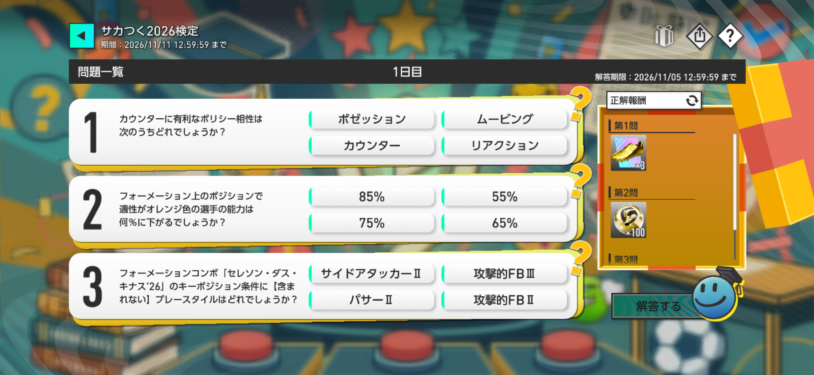
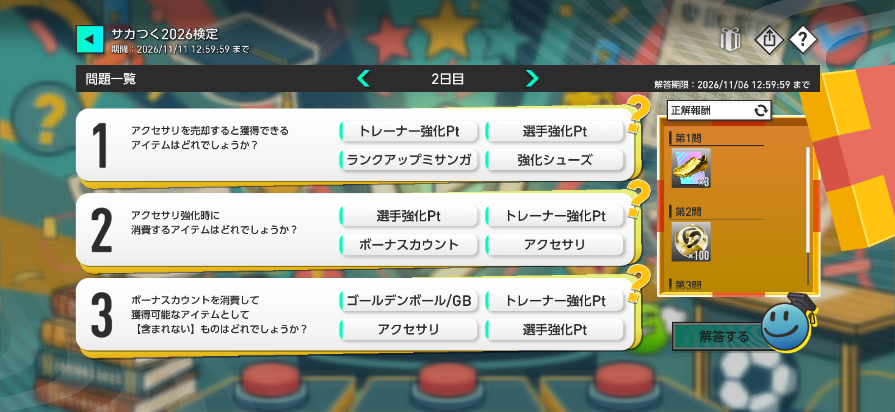
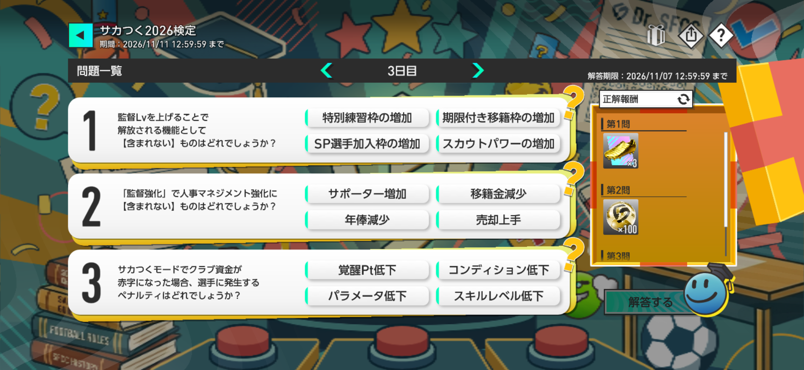
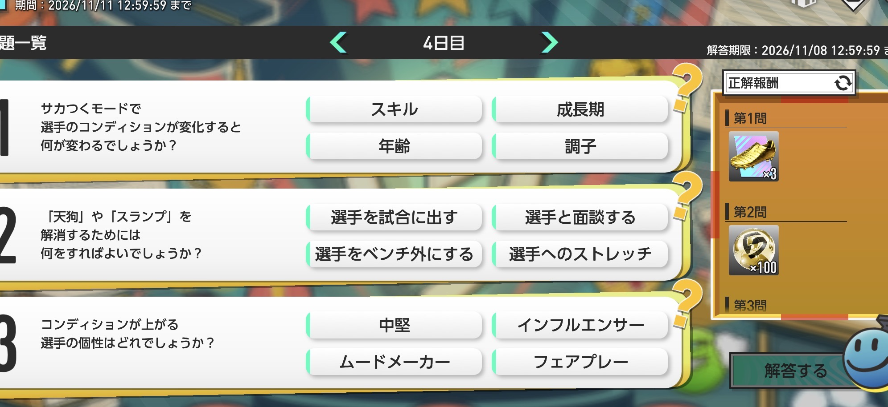

【サカつく2026】第3回サカつく検定の答え・正解まとめ｜1日目～7日目
2026年11月4日から開催の「第3回サカつく検定」。1～4日目の公式正解12問を確認済み。11月8日公開の5日目3問と4択、予想解答・解説を追加しました。答えはボタンで表示・非表示を切り替えられます。
第3回サカつく検定の問題・答えを日別に更新
第3回は11月4日（水）13:00からスタート。 問題は11月10日まで毎日13:00に更新されます。1～4日目の公式正解と、5日目の3問・4択・予想解答・解説を掲載しました。6日目以降もゲーム内表示に沿って順次掲載します。
7日目は11/11 13:00
1～4日目は公式正解確認済み
正解の扱い： 公式発表前の回答は根拠を明記し、未確認の内容を「公式正解」とは表記しません。
開催日程・回答期限・報酬について
- 出題期間：11月4日～10日の毎日13:00に、その日分の3問が更新されます。最終日の解答期限は11月11日12:59です。
- 参加方法：HOME画面のイベントアイコンからイベントTOPへ進み、「サカつく検定」を選択します。
- 解答報酬：正解・不正解にかかわらず、問題に解答すると獲得できます。
- 正解報酬：正解発表後にプレゼントボックスへ配布され、正答数が多いほど報酬が増えます。
- 報酬受取期限：11月18日12:59（JST）。7日目の正解発表は11月11日13:00です。
第3回サカつく検定 1日目の答え【11月4日】
出題開始：2026年11月4日 13:00（JST）

- ポゼッション
- ムービング
- カウンター
- リアクション
解説：監督ノートの「ポリシー相性」によると、リアクションはカウンターに強く、カウンターはムービングに強い関係です。「カウンターに有利」なのは、カウンターに対して有利な「リアクション」です。
- 85%
- 55%
- 75%
- 65%
解説：監督ノートの「ポジション」によると、選手の能力補正は赤100%・オレンジ85%・黄色70%・無色55%です。オレンジ色の適性では能力が85%になります。
- サイドアタッカーⅡ
- 攻撃的FBⅢ
- パサーⅡ
- 攻撃的FBⅡ
解説：当サイトのフォメコンデータによる「セレソン・ダス・キナス'26」（C061）のキーポジション条件は、攻撃的FBⅡ（LB）・攻撃的FBⅢ（RB）・パサーⅢ（DM）・サイドアタッカーⅡ（LW）です。「パサーⅡ」は条件に含まれません。詳細はフォメコン詳細ページで確認できます。
第3回サカつく検定 2日目の答え【11月5日】
出題開始：2026年11月5日 13:00（JST）

- トレーナー強化Pt
- 選手強化Pt
- ランクアップミサンガ
- 強化シューズ
解説：監督ノートの「アクセサリ」には、アクセサリ一覧の売却モードでアクセサリを売却すると「選手強化Pt」を入手できると記載されています。
- 選手強化Pt
- トレーナー強化Pt
- ボーナスカウント
- アクセサリ
解説：監督ノートの「アクセサリ」によると、他のアクセサリを素材として消費し、経験値を獲得してレベルを上げます。強化で消費するのは「アクセサリ」です。
- ゴールデンボール/GB
- トレーナー強化Pt
- アクセサリ
- 選手強化Pt
解説：監督ノートの「ボーナスカウント」では、消費するとアイテムやアクセサリを獲得できると説明されています。GBは逆にボーナスカウントの回復時に消費する通貨であり、ボーナスカウントを使って獲得するアイテムには含まれません。
第3回サカつく検定 3日目の答え【11月6日】
出題開始：2026年11月6日 13:00（JST）

- 特別練習枠の増加
- 期限付き移籍枠の増加
- SP選手加入枠の増加
- スカウトパワーの増加
解説：監督ノートの「監督Lv」では、監督Lvの上昇で特別練習枠と期限付き移籍枠が追加され、スカウトパワーが増加すると説明されています。「SP選手加入枠の増加」は記載されていないため、選択肢の中ではこれが該当します。
- サポーター増加
- 移籍金減少
- 年俸減少
- 売却上手
解説：監督強化の「人事マネジメント」には「移籍金減少」「年俸減少」「売却上手」があります。サポーター増加は人事マネジメント強化の項目ではありません。
- 覚醒Pt低下
- コンディション低下
- パラメータ低下
- スキルレベル低下
解説：監督ノートの「資金」によると、クラブが赤字でシーズンを終えると翌シーズンの在籍選手のコンディションが半年間低下します。低下量は赤字額が大きいほど増加するため、正解は「コンディション低下」です。
第3回サカつく検定 4日目の答え【11月7日】
出題開始：2026年11月7日 13:00（JST）

- スキル
- 成長期
- 年齢
- 調子
解説：選手のコンディションは「絶好調・好調・普通・不調・絶不調」などで表される、選手の調子にあたります。コンディションが変化すると調子が変化し、練習効果や試合中の能力にも影響します。
- 選手を試合に出す
- 選手と面談する
- 選手をベンチ外にする
- 選手へのストレッチ
解説：監督ノートの「コンディション」「面談」によると、「天狗」や「スランプ」になった選手には面談を申し込み、選手の欲求に合う選択肢を選んで面談を成功させることで解消できます。
- 中堅
- インフルエンサー
- ムードメーカー
- フェアプレー
解説：個性「ムードメーカー」はチームの選手のコンディションに良い影響を与えます。SEGA公式プレイガイドでも、リーダーの資質やムードメーカーは選手全員のコンディションに良い影響を与えると説明されています。
SEGA公式プレイガイド「選手の『個性』を把握しよう」を確認する →第3回サカつく検定 5日目の答え【11月8日】
出題開始：2026年11月8日 13:00（JST）
- チームのポリシー
- 選手のコンディション
- 選手の疲労度
- チームの連携線
解説：監督ノートの「欲求」によると、欲求が「チームメイト」の選手は、チームのポリシーやチームメイトとの相性を重視します。選択肢では「チームのポリシー」が該当します。
- 守備を固める
- 得点を奪え
- 流れを変える
- 大勢が決した
解説：監督ノートの「ゲームプラン」によると、「大勢が決した」は勝ち負けに関わらず得点差が大きくついているときに発動するゲームプランです。「守備を固める」は自チームが勝ち越しているとき、「得点を奪え」は負けているときに発動します。
- ドリブル
- ロングパス
- インターセプト
- ミドルシュート
解説：監督ノートの「チームカラー」によると、攻撃スタイルを速攻側に寄せると選手間の距離を大きくとり、ロングパスの頻度が上がります。ポゼッション側に寄せた場合はショートパスの頻度が上がります。
第3回サカつく検定 6日目の答え【11月9日】
出題開始：2026年11月9日 13:00（JST）
6日目の問題文・4択・答えは、ゲーム内で確認後に追加します。公式正解の発表前は、根拠に応じて確認状況を区別します。
第3回サカつく検定 7日目の答え【11月10日】
出題開始：2026年11月10日 13:00（JST）
7日目の問題文・4択・答えは、ゲーム内で確認後に追加します。公式正解の発表前は、根拠に応じて確認状況を区別します。
問題と正解の更新方針
- 1～4日目は公式正解を確認済み、5日目は3問の問題文・4択・予想解答を掲載済みです。6日目～7日目は出題を確認できた順に追加し、未公開の問題・正解は推測で埋めません。
- 問題画像から問題文と4つの選択肢を正確に転記し、表記を無断で変更しません。
- 回答の速報は監督ノートと当サイト保有データを根拠に確認し、不確実な場合は「確認中」と表示します。
- ゲーム内で正解が発表されたことを確認後、「公式正解確認済み」に更新します。答えと解説は初期状態で非表示にし、ボタン操作で確認できるようにします。
- 記事内の日付・掲載済み問題数・最終更新日は、実際の追加内容に合わせて更新します。